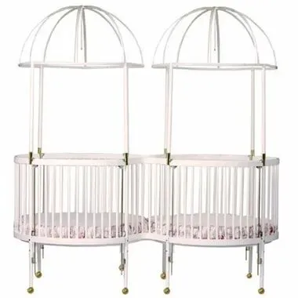
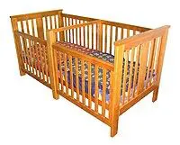
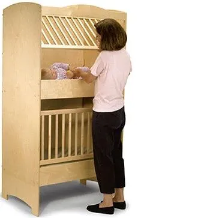
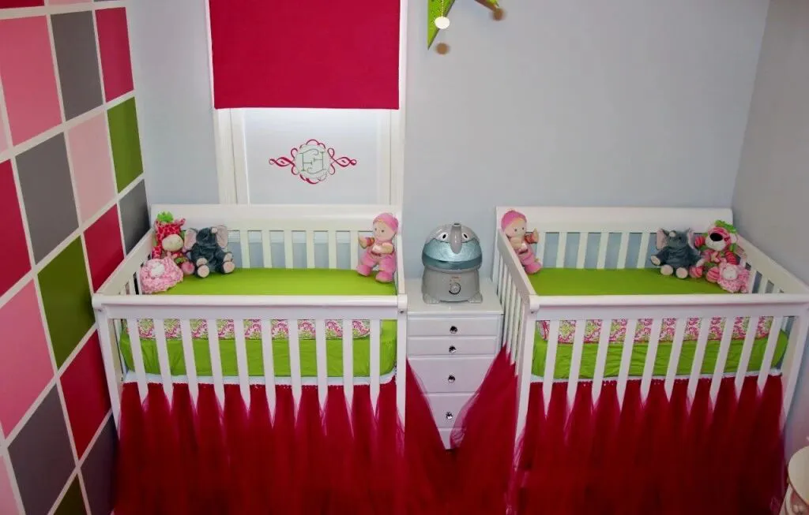
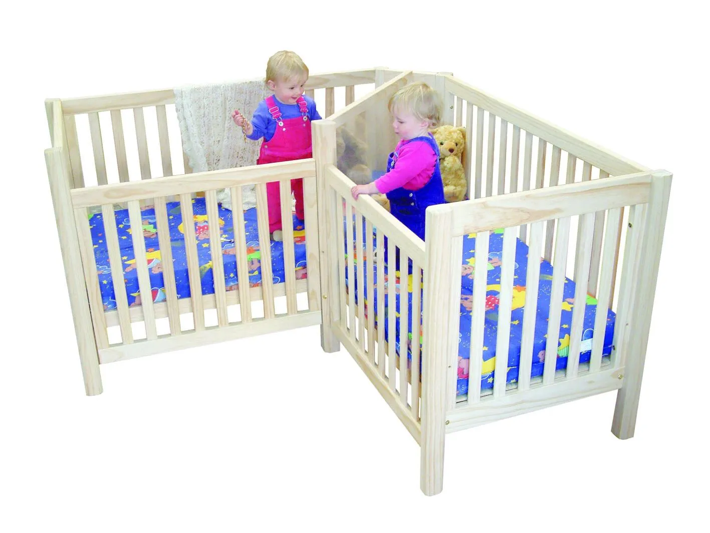
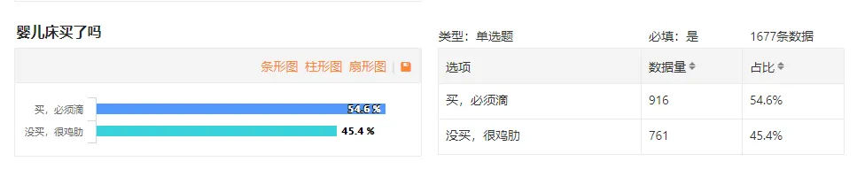

孖仔帮
公众号ID：twinsbang
关注
文|圆圈妈妈
网图|侵删
圆圈兄弟出生的那年是2015年，当时市面上的双胞胎婴儿床很少，便宜的看不上，贵的买不起。
我记得，我当时是捂着剖腹产伤口的疼痛，在各大网购平台上逛了三天三夜，都没有找到合适的。
如今，再看市场上新推的双胞胎婴儿床，真心地感慨：有钱真好，选择多了去，不怕你想不到，就怕你给不起。
今天我们来LOOK一LOOK老外的双胞胎婴儿床长啥样。
买不起，养养眼YY下也不赖。
1，Twin Round Wood
这款双圆形婴儿床有四种不同的帷幔配置，最大亮点是颜值超高，相信很多颜值控的妈妈看到这款床后都会忍不住要买买买。

但是且慢，这种床有一个很大的硬伤，它的设置考虑实际上是为了放在房间中央（或至少远离墙壁），可能需要更多的空间来容纳这两个大boss。
如果卧室不够大，那么...忍痛割爱吧！
而且这种婴儿床的平均价格约为3,000美元，
注意：这仅仅是床的价格而已，还不包括床垫和其他寝具套件。
2，Corner Cot for twins
这是Pamco公司专门为双胞胎婴儿量身设计的婴儿床。
不得不说，这个酷炫的设计的确是加分项，款式独特新颖，外观简洁大方，更巧妙的是，这款床还可以转换成一个可爱的小角沙发，只需额外购买一个套件即可实现，SO EASY。
还有一种同类型款式的Twin Cot，实用性非常好，本质上就像是两个床头和床尾拼接在一起，它还可以用额外的套件转换成两张双人床。

最大的亮点是，可以从双胞胎的婴儿期一直睡到5岁，使用率超高。
价钱比第一款便宜了一半，才1329美元。
3，Twin Bunk
Net Kids Wear公司曾经推出一款创新型双层床，它采用了极好的双层床设计，非常节省空间，对于卧室空间有限的双胞胎家庭来说，这可能是一个理想之选。

售价700美元，再加上150美元的运费，总共不到1000美元就可以轻松解决双胞胎宝宝的睡眠问题，但这款双层床停产了。
不过呢，停产了也是大势所趋的，不必觉得遗憾，个人认为这种设计真的好鸡肋。
你们有见过农村用的鸡笼吗？
如果没见过，那么把这款双层床多看几眼就有既视感了。哈哈~
4， two Mini Cribs
这种双胞胎婴儿床严格意义上讲，不是专为双胞胎设计，其实就是相当于两个独立的婴儿床。

它们具有标准婴儿床的基本功能，但胜在体积更小、更轻，非常省空间，对小户型的儿童房特别友好。
若额外购买套件，还可以把两张婴儿床拼接在一起转换成双人床，而且相对前面3款，性比价最高，平均340美元。

我们孖仔帮做过一项调查：双胞胎婴儿床买了吗？
结果很意外：买和不买，差不多各占一半，已买的略高一点。
我问过社群内没有买婴儿床的妈妈们，主要原因是，觉得婴儿床的使用率不高，有那点闲钱，不如多买几片不侧漏又好用的尿不湿。
买了婴儿床的妈妈们其实也很苦恼，真正用的时候，也就月子里那个把月或者睡到3个月左右，就因为各种莫名其妙的原因闲置了。
妥妥的理想很骨感，现实很丰满。
难怪闲置群折价甩卖处理最多的就是婴儿床，没有之一。
真的是：买的时候有多心动，甩卖的时候就有多心痛。
个人认为：
如果你希望双胞胎能早日独自入睡，给他们每人准备一张婴儿床还是有必要的。
我们最终没买婴儿床，是卧室太小，钱包太瘦了，好一点的婴儿床都要好几千上万，就凭三天一罐奶粉的速度，我和圆圈爸的这个小康家庭一夜间回到了解放前。好多日用品，若是需求不是很大，都是能省就省。
现在国内市面上新推了很多双胞胎专用的婴儿床，价钱有便宜有贵，款式呢有仿国外的，也有独家设计的，都有异曲同工之妙，建议孕期的妈妈们别闲着，有需要买婴儿床就早点做攻略。
我们公众号每个月的跳蚤群都有不定期开放。经常会有妈妈们转让婴儿床，大多数八九成新，性价比也很好，可以去淘淘看，顺便问问过来人的使用经验也是个不错的选择。
你们家买的是哪款婴儿床？使用体验如何？欢迎留言区分享。

-END-
微信公众号：孖仔帮
ID : twinsbang
专注双胞胎孕育，养育，教育经验分享
扫码关注我们
点一下你会更好看耶


